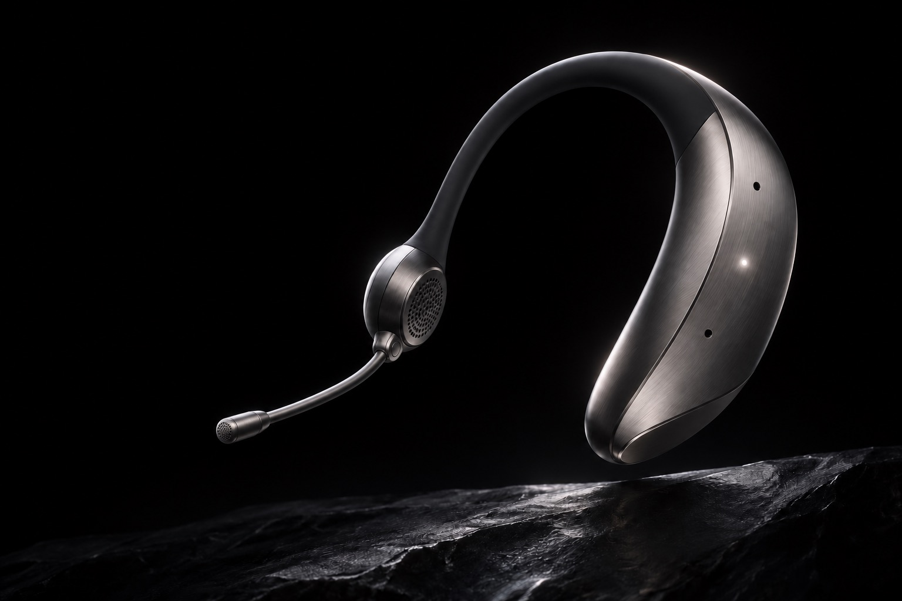

When will this product launch?
English
INDEPENDENT AI INTERPRETATION
언어는 달라도.
대화는 자연스럽게.
이제 상대방의 눈을 보며 대화하세요.
각자의 언어로 말하고, 나의 언어로 듣는 AI 통역 웨어러블.
독립형 Wi-Fi · 개인별 통역 · 마이크 일체형
귀에 걸다. 서로를 이해하다.PRODUCT CONCEPT / 개발 제안
LESS BARRIERS. MORE CONVERSATION.
번역을 위해 멈추던 대화가,
서로를 향해 흐르도록.
화면을 번갈아 보거나 기기를 건네는 대신,
이제 상대방의 눈을 보며 대화하세요.
표정과 눈빛까지 함께 나누는 대화를 위해.
우리가 만드는 것은 대화 속에 자연스럽게 스며드는 통역입니다.
MADE FOR HUMAN CONNECTION같은 테이블.
제품 및 사용 장면은 개발 콘셉트 이미지입니다.같은 테이블.
서로 다른 언어.
하나의 대화.
YOUR LANGUAGE, YOUR EXPERIENCE
각자 말하고.
각자 이해하는 방식.
참가자별 입력과 청취 언어를 구분해,
같은 대화를 각자의 언어로 전달하는 구조를 개발합니다.
대화의 흐름설명용 시뮬레이션
김
한국어로 말하기
이번 제품은 언제 출시되나요?
この製品はいつ発売されますか？
日本語번역 경로를 설명하기 위한 예시입니다. 실제 음성 인식·번역을 실행하지 않습니다.
NO CENTRAL DEVICE
중앙 장치 없이.
연결은 더 단순하게.
각 웨어러블이 Wi-Fi를 통해 통역 서버에 직접 연결됩니다.
스마트폰은 처음 네트워크를 설정할 때만 사용하도록 설계합니다.
한국어 사용자영어 사용자일본어 사용자
각 기기에서 Wi-Fi 연결
AI 통역 서버음성 인식 · 번역 · 음성 전달
처음 한 번, 연결
휴대폰 설정 화면에서 Wi-Fi를 선택합니다. 저장된 네트워크에는 다시 연결하도록 설계합니다.
함께 대화할 그룹 참가
주변 기기를 찾고 참가를 확인합니다. 언어는 인사말 감지와 직접 선택을 함께 지원하는 방향입니다.
이제, 대화에 집중
내 목소리를 전달하고 상대의 말을 내 언어로 듣습니다. 통역 중 스마트폰이 필요 없는 경험을 목표로 합니다.
인터넷 연결이 필요합니다. 새 장소에서는 Wi-Fi 재설정이 필요하며, 웹 로그인이 필요한 공용망은 지원 방식 검토가 필요합니다.
QUIETLY REFINED
기술은 작게.
존재감은 정교하게.
절제된 그래파이트 컬러와 부드러운 곡선.
입 방향으로 뻗은 짧은 마이크 암과
귀를 막지 않는 오픈이어 스피커를 하나로 담았습니다.
착용자의 목소리를 가까이 받도록 설계하는 방향입니다.
- OPEN-EAR대화에 열려 있는 디자인
- MICROPHONE BOOM입 방향으로 배치한 짧은 마이크 암
- INDEPENDENT무선으로 연결되는 개인 단말
WHERE CONVERSATION HAPPENS
언어가 만나는 모든 순간에.
국제 비즈니스
상담과 협상, 서로의 의도를 더 가까이.
다국적 협업
같은 공간에서 각자의 언어로 의견을.
여행과 만남
낯선 언어 앞에서도 이어지는 대화.
FROM CONCEPT TO CONVERSATION
선명한 비전.
현실적인 개발.
AI 통역 큐브와 다중 마이크 통역 개발 경험을 바탕으로, 개인 착용형 통역으로 확장하는 제품 콘셉트입니다.
현재 웨어러블 하드웨어는 기획·개발 검토 단계입니다. 착용자 음성 분리, 동시 발화, 에코 제거, 무선 연결 안정성 및 배터리 성능을 실제 환경에서 검증할 예정입니다.
AI 통역 큐브 프로젝트 보기BUILD THE NEXT CONVERSATION
다음 대화의 가능성을,
함께 만들 파트너를 찾습니다.
웨어러블 하드웨어 개발 · 음향 기술 · 시범 도입 · 사업 협력
jjpapa36912@gmail.com